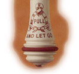

Homeopathy: flushing science down the lavatory
 My purpose in this article is not to explain that homeopathy doesn't work -- for all I know it might -- but that widespread acceptance of homeopathy is damaging to the scientific enterprise, and ultimately to society. I will also make the suggestion that the increased interest in homeopathy, and in other forms of alternative medicine, is a reaction to a dissatisfaction with modern medical practice -- and understandable reaction in many cases, but a dangerous and counter-productive one that ought to be resisted.What is science?
Let's start by considering what 'science' is. There are basically three way of thinking about science. The first -- the way scientists themselves think of it -- is that science is a process for gathering knowledge about how things work. That process involves observation of the natural world, the systematic organization of the results of that observation, and the formulation and testing of theories (i.e., possible explanations). The second way to think of science -- and this is the way most educated, non-scientists think of it, if they think of it at all -- is that science is a body of knowledge that has been collected by the process of scientific investigation. We have varying degrees of confidence in this body of knowledge. We are extremely confident, for example, that all heavy objects are attracted to one another, and we call this observation 'gravity'. We are somewhat confident that smoking is a risk factor in various cancers, but we (mostly) aren't quite as confident about this as we are about gravity. And then there are aspects of the body of scientific knowledge that are, frankly, quite speculative. For example, it is widely held that protons and neutrons are made of three quarks each. But I don't see anybody betting the pension on this particular proposition. When we start learning about science, we usually start by learning about the body of knowledge. Science is presented as a series of facts to be remembered: clouds are formed by water evaporating; the heart pumps blood; there are one-hundred-odd chemical elements; and so on. In a way this is unfortunate, because the body of knowledge is ever-changing -- but the process is not. A fundamental principle of science is that there is one optimal way to find out about the natural world, and that is to observe it, as carefully, methodically, and in as much detail as possible. We can argue about whether there really are quarks and gluons, but no physicist would dispute that the best way to find out is actually to look for them in the places we expect them to be. It's entirely possible that people with no particular interest in science don't really see the distinction between the two views of science I put forward. In that case, I think a helpful analogy can be found in the field of history. We can view history as the process of finding out about the past, and its implications for the present and the future, by looking at documents, artefacts, architecture, and so on. Or we can think of it as kings-and-dates-and-battles. The popular view of science, and the one we predominantly teach to our children, is a kings-and-dates-and-battles one. The third way to look at science, the homeopathy way if you will, is that science is a dark enterprise carried on by odd people with strange and extravagantly expensive equipment, the ultimate purpose of which is to build a social pyramid with scientists at the top. The main problem with this viewpoint is that it's simply incorrect. I was a working scientist for many years, and that only things I am socially superior to live in kennels. The more relevant problem is that it fails, as Thomas Aquinas might have said, to distinguish the accidentia from the substantia. The substantia, the substance or essence, of science is the scientific method, the way we collect and organize our observations. The accidentia, the incidentals, are particle acclerators, white coats, research funding councils, Nobel prizes, PhDs, vivisection, Bayesian statistics, odd jargon, and all the rest of it. None of these are essential to science, properly understood, they are merely social manifestations of the way the scientific enterprise is carried on in a modern industrialized society. Another criticism that is often leveled at science by people who lean towards homeopathy is that it is reductionist. That is, science seeks to understand the world by breaking it down into ever smaller pieces. Now, it's clear that not everything can be understood reductionistically. It's fantastically difficult to understand how a person will behave by studying brain cells. We can't even do that with grasshoppers yet, let alone people, and grasshoppers have incredibly simple brains compared to people. But, within its proper domain, reductionism has been fantastically successful. And, in the end, it is just an extension of the way we humans intuitively think -- we naturally tend to break complex problems into a larger number of less complex problems until (we hope) we get to problems that we can actually solve.Medicine as a branch of scientific investigation
Modern, Western, conventional medicine is a development of the scientific method as it developed during the 18th and 19th centuries. A fundamental principle of modern medicine, which derives from modern science in general, is that the human body is a chunk of the natural world, and can be studied and understood using the same tools we use to study and understand rocks, trees, and jellyfish. Of course, I don't mean the same physical tools, but the same conceptual tools. The scientific view of the human body is that it is best understood by examining it, and performing controlled experiments to see how it responds to particular interventions. By doing this, we build up a body of knowledge about the body and the things that comprise it. As always with science, we have varying levels of confidence in this body of knowledge. We know, for example, a person can survive without a spleen, but not without a heart. Less trivially, we know that many people find aspirin is helpful in preventing some kinds of blood clotting disorders, but not as effective as heparin, although it has fewer side effects. But how do we know aspirin affects blood clotting? In two ways, chiefly. First, we know this because we have compared the clotting tendencies of people taking certain doses of aspirin with people who are not. This comparison is essentially a statistical one: not everybody responds to aspirin in this way, and everybody responds in differing degree. But we know what the likelihood is that a person will respond positively. The second way we know that aspirin affects blood clotting is that we have studied in great detail the mechanics of blood clotting. We know what chemicals are involved, when and how they are released and from what, and what other chemicals will affect the process. This information comes from years and years of patient laboratory work by large numbers of people. Whatever we may think of medicine as a branch of science, there's no getting away from the fact that over the last hundred years or so this approach to medicine has been stupendously successful. You can treat an infected wound with mouldy bread, but a penicillin injection works better, more quickly, and more controllably. Critics of modern medicine are quick to point out that life expectancy has not increased much over the last hundred years, and that may be true. But it's quality, not quantity, that matters, and there's simply no doubt that people have the potential to live healthier lives than they did a hundred years ago. This improvement in health hasn't come about entirely as a result of medicine of course: it's also due to improved sanitation, more efficient food production, and a better understanding of what makes a healthy living environment. All these life-enhancing factors come from a basic scientific understanding of the world.Homeopathy
Homeopathy started scientifically -- at least, it started from a testable proposition which is in itself scientific: the principle that 'like cures like'. That is, it starts from a proposition that a very small dose of something that causes the symptoms of, say, influenza can be used to treat influenza. I say that this is a 'scientific' proposition because it is, in fact, based on observation of the natural world. Samuel Hahnemann, the founder of homeopathy, probably based his work on the findings that cinchona bark, which causes fever-like symptoms in large quantities can relieve fever in very small quantities. Hahnemann and his followers investigated many different substances that had an effect on the human body, and the amount of substance that was needed to exert an effect. This is not just science -- it is good science, essentially modern in its outlook. No doubt many useful discoveries were made. And it has to be said that, compared to the treatments favoured by physicians in Hahnemann's day, 'like cures like' was positively benign. What Hahenmann and co. were essentially doing was what would now probably be called herbalism -- the practice of treating illness with preparations made from plants with minimal processing. Herbalism can certainly be effective, and it can be pursued scientifically, although in practice it often is not. But it's still a sensible approach to treating illness, particular in a pre-industrial society. So what went wrong? I imagine that what went wrong is that Hahnemann and his followers lacked both the mathematical tools and the methodological rigour to pursue their investigations in a fully scientific way. What would have been needed to do this was a large number of patients with similar symptoms, and some sophisticated statistical tools, neither of which was readily available. So, instead of pursuing scientific explanations for the efficacy of their treatments, the early homeopaths turned increasingly to quasi-magical explanations. It was known, for example, that very small amounts of some materials were needed to produce effects in patients, and this was at odds with the general observation in chemistry that substances have an effect in proportion to their concentration. The observation was therefore explained in terms of a wholly speculative 'vital force' that could be transferred from the substance to water, and would actually be more efficacious in smaller quantities. The process of creating ever-smaller concentrations of substance by repeated dilution was (and is) known as 'potentisation'. Unfortunately, we have now moved outside the realm of science, because the 'vital force' did not fit into the body of scientific knowledge as it existed in Hahnemann's day, and the explanations that would have fit were not to appear for another two centuries. What's more, the 'like cures like' principle itself never seems to have been subjected to much experimental scrutiny. There are many substances that cause disease-like symptoms in humans, and which could not conceivably be used to treat those diseases. Even in Hahnemann's day it was recognized that 'potentisation' was problematic. There were practitioners who argued that the increasingly tiny concentrations favoured by Hahnemann would be ineffective. But, for various reasons -- perhaps the competing egos of the scientists of the day -- Hahenemann continued to promote every-decreasing concentrations. Some of his preparations, and modern ones, have dilutions in which the concentration is smaller than one part in 1010. So far as we know, there is no amount of substance smaller than a single molecule, and a dilution like this would be unlikely -- incredibly unlikely -- to have even a single molecule in. That leaves homeopaths trying to explain how a substance can affect the human body when there isn't actually any of it present. Hence the 'vital force'. The problem that the 'vital force' creates for science is that its existence or otherwise isn't really a scientific matter at all. We can't observe or study it. We can't create a theory that explains its origin -- at least, not a theory we can test. We can't measure it, and it's not remotely like anything that we know about through scientific observation. Modern homeopaths know this, of course, and they've put forward other explanations that are more in line with science. The most popular seems to be 'water memory' -- the idea that water somehow holds a memory of something that was dissolved in it, even when that something is not present. Water memory is a scientific proposition, in that we can look for it and, in principle, detect and measure it. Unfortunately, no experiment so far has been able to detect it. Does that mean it doesn't exist? Not exactly, not beyond all conceivable doubt -- but it does mean that there are almost certainly better explanations of the efficacy of homeopathy -- the placebo effect being the most obvious. In this respect, homeopathy is different from, say, acupuncture. The explanations that are offered by acupuncurists for the effectiveness of their practice don't sound very convincing to a conventional physician. But there's no doubt that sticking needles in the body is capable of having an effect on it. Similarly, there's no doubt that herbal preparations are capable of affecting the body, for good or ill. But the only way that homeopathy is capable of affecting the body at all is to accept as true a proposition that can only be true if we flush three centuries of scientific investigation down the lavatory.Hitting science where it hurts
Science is founded on a very simple assertion: the best way to understand the world is by observing it, and forming testable explanations about what we observe. The problem with homeopathy is that its basic principles -- 'like cures like' and potentisation -- are now thoroughly testable. But when they are tested, they are found to be baseless. To be fair, some careful studies have shown that homeopathy has some therapeutic efficacy beyond the placebo effect. The reasons for this are not at all obvious. But as a discipline, homeopathy makes claims that cannot be shown to be true, and that most people believe have been convincingly shown to be false. So by continuing to put their trust in homeopathy, people are essentially saying that the scientific method is unreliable. It is unreliable in that it consistently produces incorrect knowledge, even when methodically and rigorously applied. Now, science is up to the challenge of dealing with claims that its body of knowledge is, in fact, imperfect and incomplete. I would be prepared to bet my house that some of the things that are routinely taught in school science classes will be shown to be untrue in my lifetime. And of course scientific knowledge has both expanded and changed enormously over the last two hundred years. But homeopathy, if it works, does not make a claim that scientific knowledge is imperfect or incomplete. It makes a claim that the scientific method itself is defective. This is a very strong claim, and a very dangerous one. Science has been staggeringly successful at leading to developments that have radically improved life for countless people, around the world. Anything that seeks to diminish respect for the scientific method should be -- must be -- opposed.Why do people still trust homeopathy?
Despite the lack of evidence that homeopathy works, and despite the fact that a belief in the basic assertions of homeopathy amounts to throwing science away, people continue to use it. I suspect that at least one reason for this is that people are uncomfortable about the way medicine is practiced today. Medicine has largely become somewhat impersonal, treating the patient as little more than a carrier for the illness being treated. Most alternative medicines make capital out of this, presenting themselves as 'holistic' or 'patient-centered'. Many people have problems that manifest as medical conditions, which in fact could be fixed, or at least improved, by a sympathetic listening. And it's been known since the days of Aristotle that most common illness are self-limiting, and will get better without treatment. Many people know this, but resent being told to take an aspirin and come back if it's no better in a fortnight. Conventional medicine isn't well set up to deal with these kinds of patients, although we're probably getting better. But conventional medicine is well set up to deal with the kinds of illness which without treatment are extremely debilitating, or dangerous, or both. In short, the kinds of illness that actually need treatment. Consequently, the damage done by homeopathy to conventional medicine is two-fold. First, by giving an apparent benefit in illnesses that don't actually need treatment, it encourages people to think that it's going to work in illnesses that really do need treatment. But all the evidence is that it won't work in those cases. And, second, it makes a claim that therapies do not need to be proven effective using the scientific method. But modern medicine is effective to exactly the extent it is treated as a branch of science. Take the science out of medicine, and in no time at all we'll be back to leeching and bloodletting.